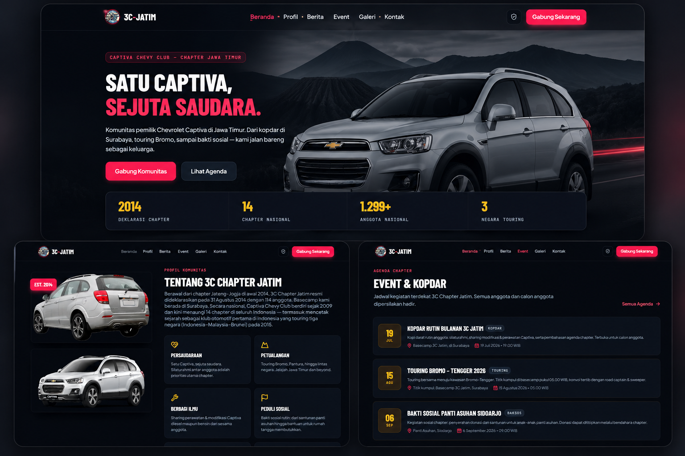

3C Jatim — Community Profile Website 🚗
Modern Community Profile Website for Chevrolet Captiva Club Chapter Jawa Timur

3C Jatim — Community Profile Website adalah website company/community profile yang dikembangkan untuk 3C Chapter Jawa Timur, komunitas resmi pemilik dan pecinta Chevrolet Captiva di wilayah Jawa Timur.
Website ini dirancang untuk menjadi wajah digital komunitas, menampilkan identitas, sejarah, kegiatan, dan informasi keanggotaan dengan visual yang modern, responsif, dan berkarakter kuat. Dengan tema dark UI yang elegan dan navigasi antar halaman yang mulus, website ini mencerminkan semangat komunitas otomotif yang solid dan profesional.
Proyek ini mencakup pengembangan seluruh halaman publik beserta panel admin untuk pengelolaan konten event, galeri, dan data anggota secara mandiri oleh pengurus komunitas.
- Landing Page & Hero Section: Halaman utama komunitas dengan hero section berkesan tinggi, tagline komunitas, dan CTA yang terarah.
- Profil & Sejarah Komunitas: Halaman dedicated yang menceritakan latar belakang, visi-misi, dan perjalanan berdirinya 3C Chapter Jawa Timur.
- Event & Kopdar Listing: Informasi event dan kopdar komunitas lengkap dengan tanggal, lokasi, kategori, dan status kegiatan.
- Galeri Komunitas: Halaman galeri visual dokumentasi kegiatan, touring, dan momen kebersamaan anggota komunitas.
- Informasi Kontak: Halaman kontak dengan informasi media sosial, WhatsApp group, dan poin kontak pengurus komunitas.
- CTA Pendaftaran Anggota: Formulir dan alur pendaftaran anggota baru yang terintegrasi dengan proses verifikasi pengurus.
- Panel Admin: Dashboard admin untuk mengelola konten event, galeri, data anggota, dan informasi komunitas secara mandiri.
- Responsive & Modern Dark UI: Desain antarmuka dark-themed yang modern, elegan, dan responsif di seluruh perangkat (mobile, tablet, desktop).
- Multi-Page Navigation: Navigasi halaman yang rapi dan intuitif antar seluruh bagian website komunitas.
- Identitas Digital Profesional: Memberikan komunitas 3C Jatim wadah digital resmi yang mencerminkan profesionalisme dan solidaritas anggota.
- Kemudahan Penyebaran Informasi: Mempermudah pengurus dalam menyampaikan update kegiatan, event, dan pengumuman kepada seluruh anggota dan calon anggota.
- Rekrutmen Anggota Lebih Efektif: CTA pendaftaran yang terintegrasi mendukung pertumbuhan keanggotaan komunitas secara terstruktur.
- Manajemen Konten Mandiri: Panel admin memungkinkan pengurus memperbarui konten tanpa memerlukan bantuan developer secara berkelanjutan.